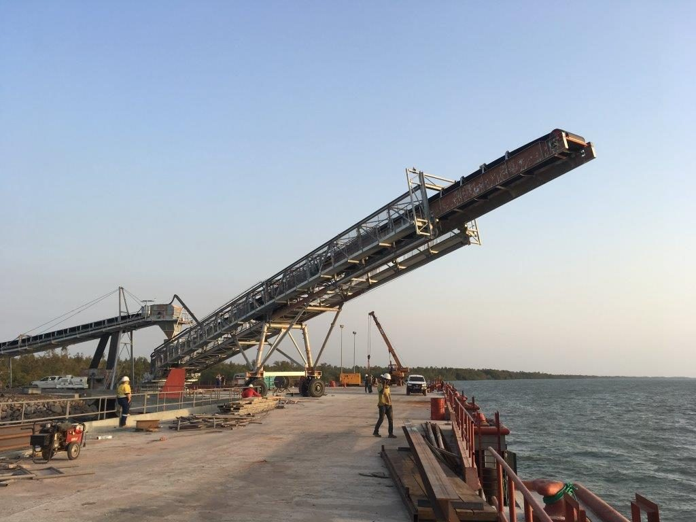

Ship loading systems built around your cargo
We design mobile ship loaders and conveyor-based loading systems for bulk materials and bagged cargo. From the first truck tip to the final discharge into the hold, we plan the route for ports, harbours and industrial terminals.
Every system is subject to project requirements and engineering review.
Request a QuoteExplore our solutions
Great loading starts with the right questions
Before we talk about machines, we talk about your operation: what material moves, where it arrives, and how it reaches the vessel. Clear answers lead to a sensible scope.
Trace the cargo
Follow the material from the receiving or staging area through every transfer and conveyor to the ship-side discharge.
Study the berth
Look at vessel access, loading positions, operating reach, ground conditions and movement limits.
Scope what matters
Separate what your project truly needs from optional features that only suit some layouts.
Six ways we approach ship loading
Explore the options, then share your context. Final equipment and configuration are always project-specific.

Every cargo behaves differently
Throughput, dust control and discharge arrangement depend on material properties and your project specification.
Coal Loading
Assessed around coal characteristics and the site's dust-management needs.
Iron Ore Loading
Material size, flow, wear and the supply route shape the handling plan.
Fertiliser Loading
Product form and handling conditions decide the conveying and discharge arrangement.
Grain Loading
Considered alongside source, route, vessel and dust-control needs.
Mineral Loading
Mineral properties and your operating target guide the transfer and conveying choices.
Other Suitable Bulk Materials
Discussed once properties and working conditions are understood.
Bagged Cargo Loading
Package format, staging, handling practice and ship-side placement set the arrangement.
From stockpile to ship's hold
Layouts are customised to the application. Not every system uses every stage shown.
- Truck receiving feederTakes material from trucks where this suits the operation.
- Screening, where requiredUsed only when the material and process need it.
- Transfer conveyorMoves material along the project-defined route.
- Fines or additional conveyor, where requiredAdded depending on flow and layout.
- Ship loading conveyorCarries material to the ship-side loading position.
- Telescopic spout or discharge arrangementChosen to suit the material and vessel.
- Discharge into the vesselThe final arrangement is project-specific.
Got a berth or cargo route to talk through?
Tell us about your material, supply point and vessel, and we will help shape the scope.
Request a Quote